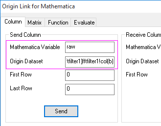
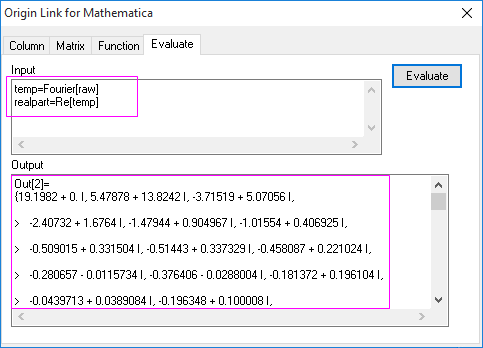
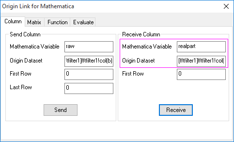
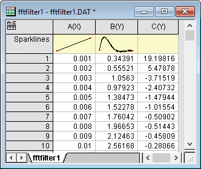
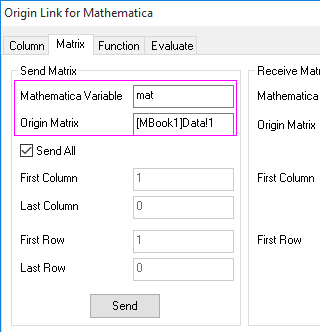
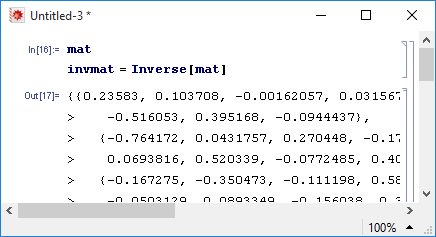
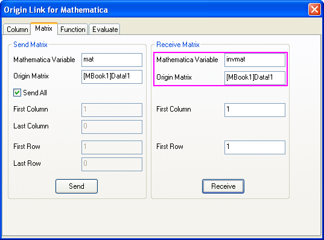
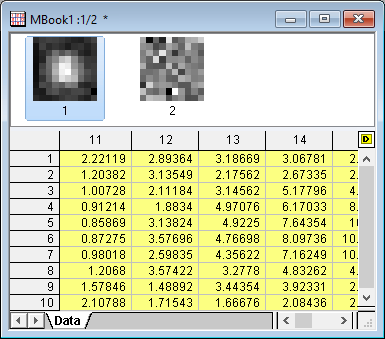

Vorgehensweise und Beispiel zur Verwendung von Mathematica Link
Mathematica-Procedure-EX
Auf dieser Seite wird die Vorgehensweise zur Verwendung von Origins Mathematica Link, inklusive Beispielen, erläutert. Die hier verwendete Version von Mathematica ist Mathematica 10.0.
Mathematica Link in Origin verwenden
Vor dem Start des Hilfsmittels müssen Sie die Konfiguration des Kernels in Mathematica einrichten, um eine Verknüpfung mit Origins Kernel OSequencer.exe herzustellen. Ausführliche Anweisungen finden Sie auf dieser Seite.
Beispiele
Bevor Sie diese Beispiele verwenden, starten Sie Mathematica Link bitte wie im vorigen Abschnitt beschrieben.
Beispiel 1
Dieses Beispiel sendet Arbeitsblattdaten an und empfängt sie von Mathematica.
- Importieren Sie unter Verwendung des Standarddesigns die Daten <Origin Installationsverzeichnis>/Samples/Signal Processing/fftfilter1.DAT in ein neues Arbeitsblatt, um sicherzugehen, dass die Namen der Arbeitsmappe und des Arbeitsblatts dem Dateinamen fftfilter1 entsprechen.
- Öffnen Sie den Dialog Origin Link für Mathematica und gehen Sie zur Registerkarte Spalte. Setzen Sie in der Gruppe Sende Spalte Mathematica Variable und Origin Datensatz auf raw bzw. [fftfilter1]fftfilter1!col(b).
- 
- Klicken Sie auf die Schaltfläche Sende, um die zweite Datenspalte an Mathematica zu senden.
- Wechseln Sie zur Registerkarte Auswerten und geben Sie die folgenden zwei Zeilen bei Eingabe ein.
- temp=Fourier[raw]
- realpart=Re[temp]
- Klicken Sie auf die Schaltfläche Auswerten, um die Ergebnisse zu erzeugen.
- 
- Wechseln Sie zum Arbeitsblatt, klicken Sie auf die Schaltfläche Neue Spalten hinzufügen
 , um Spalte C zum Arbeitsblatt hinzuzufügen.
, um Spalte C zum Arbeitsblatt hinzuzufügen.
- Gehen Sie zurück zum Dialogfeld Origin Link für Mathematica und aktivieren Sie die Registerkarte Spalte. Setzen Sie die Gruppe Empfange Spalte auf:
- Mathematica Variable: realpart
- Origin Datensatz: [fftfilter1]fftfilter1!col(c)
- 
- Klicken Sie auf die Schaltfläche Empfange, und das Ergebnis wird in Spalte C des Arbeitsblatts eingefügt.
- 
Beispiel 2
Dieses Beispiel sendet und empfängt Matrixdaten an und von Mathematica.
- Öffnen Sie die Matrix <Origin Installationsverzeichnis>/Samples/Matrix Conversion and Gridding/2D Gaussian.ogm.
- Öffnen Sie den Dialog Origin Link für Mathematica und gehen Sie zur Registerkarte Matrix. Setzen Sie in der Gruppe Sende Matrix Mathematica Variable und Origin Matrix auf mat und [MBook1]Data!1.
- 
- Klicken Sie auf die Schaltfläche Senden.
- Öffnen Sie Mathematica, wenn es nicht bereits ausgeführt wird, und erstellen Sie ein neues Notebook. Wählen Sie im Menü Evaluation: Notebook's Kernel und stellen Sie sicher, dass der Kernel "OSequencer" ausgewählt ist. Jetzt kann das aktuelle Notebook von Mathematica mit Origin kommunizieren.
- Geben Sie das folgende Skript ein:
invmat = Inverse[mat]
und führen Sie es aus.
- 
- Kehren Sie zu Origin zurück. Fügen Sie ein neues Matrixobjekt zu einem Datenmatrixblatt hinzu. Klicken Sie auf das Symbol D oben rechts im Datenmatrixblatt. Wählen Sie Hinzufügen, um ein neues Objekt hinzuzufügen.
- Öffnen Sie den Dialog Origin Link für Mathematica und setzen Sie die Gruppe Empfange Matrix auf:
- Mathematica Variable: invmat
- Origin Matrix: [MBook1]Data!2
- 
- Klicken Sie auf die Schaltfläche Empfange und Sie erhalten die Inverse der ursprünglichen Matrix.
- 
Beispiel 3
Dieses Beispiel erstellt und zeichnet eine Anwenderfunktion, die in Mathematica definiert wurde.